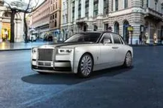
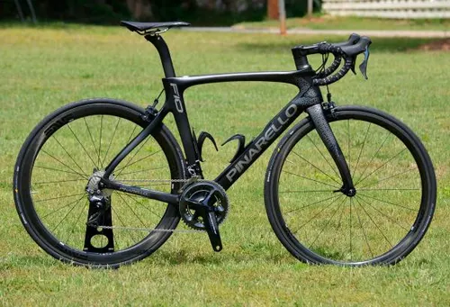
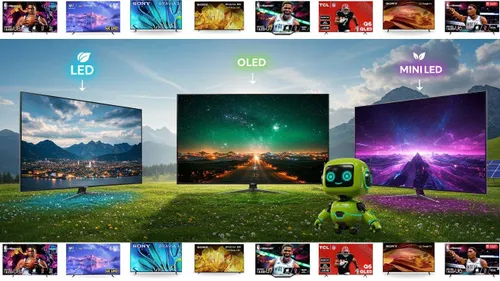
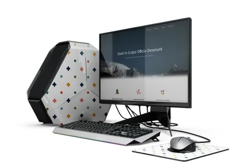

listas desordenadas
la principal diferencia entre estas y las ordenadas
marcas de auto
- honda
- mazda
- nissan
- toyota
- chevrolet
autos de gama alta
- ferrari
- lamborgini
- roll royce
- pagani

marcas bicis
- trek
- specialized
- cannondale
- scott
- orbea

pantallas
- samsung
- lg
- hisense
- xiaomi
- sony

computadoras
- hp
- dell
- lenovo
- huawei
- asus
